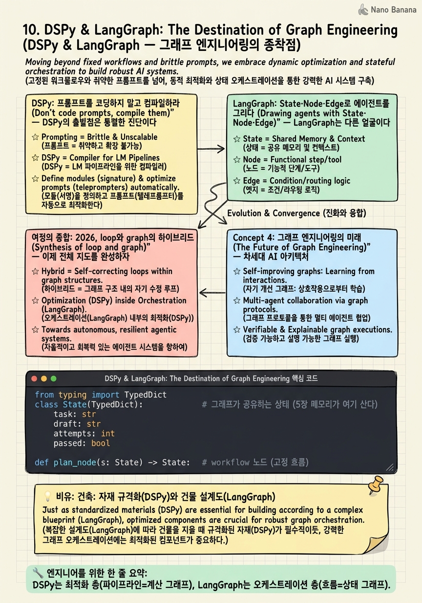

DSPy & LangGraph: The Destination of Graph Engineering

🎯 학습 목표
- DSPy가 프롬프트 파이프라인을 최적화 가능한 그래프로 보는 관점을 설명한다
- '프롬프트를 손으로 튜닝'에서 '메트릭으로 컴파일'로의 전환을 이해한다
- LangGraph의 State·Node·Edge로 stateful 에이전트를 설계할 수 있다
- loop와 graph를 하이브리드로 조합하는 2026 프로덕션 패턴을 안다
- framework→loop→graph 여정 전체를 하나의 서사로 통합한다
여정의 마지막이다. 우리는 framework(남의 골격)에서 출발해, loop(맨손 루프)를 거쳐, graph(구조화된 흐름)에 도착했다. 이 종착점을 대표하는 두 도구가 서로 다른 층위에서 그래프 엔지니어링을 완성한다.
DSPy(Khattab et al., ICLR 2024)는 파이프라인/최적화 층위에서 그래프를 다룬다. 핵심 선언은 이렇다 — LLM 파이프라인을 "text transformation graphs, i.e. imperative computational graphs where LMs are invoked through declarative modules" 로 추상화하라. 그리고 이 그래프를 컴파일러가 메트릭에 맞춰 최적화한다. 손으로 프롬프트를 갈아넣는 시대("hard-coded prompt templates ... discovered via trial and error")를 끝내겠다는 것이다.
LangGraph는 오케스트레이션 층위에서 그래프를 다룬다. State(상태)·Node(작업)·Edge(흐름)라는 저수준 primitive로 stateful 에이전트를 명시적 그래프로 짠다. 초기 LangChain의 블랙박스 Agent와 정반대로, 흐름의 모든 것을 개발자가 통제한다.
이 장은 두 가지를 한다. 첫째, 그래프 엔지니어링의 두 얼굴(최적화 그래프 DSPy, 오케스트레이션 그래프 LangGraph)을 배운다. 둘째, 여정 전체를 되짚으며 2026년 현재 프로덕션이 loop와 graph를 어떻게 하이브리드로 쓰는지 — 즉 이 코스가 도착한 실무의 현재를 조망한다.
핵심 내용
DSPy: 프롬프트를 코딩하지 말고 컴파일하라
DSPy의 출발점은 통렬한 진단이다. 우리가 LLM 파이프라인을 만드는 방식이 원시적이라는 것.
현재의 파이프라인은 "hard-coded prompt templates, i.e. lengthy strings discovered via trial and error" 에 의존한다.
프롬프트를 손으로 조금씩 바꿔가며 '이게 더 잘 되네' 하는 노가다 — 재현도 안 되고, 모델이 바뀌면 처음부터 다시다. DSPy는 이를 소프트웨어 공학의 언어로 바꾼다.
핵심 추상화가 셋이다. Signature = 모듈의 입출력 명세('질문 → 답'처럼 무엇을 하는지 선언). Module = 그 signature를 구현하는 선언적 부품(ChainOfThought, ReAct 등). Compiler(Optimizer) = 파이프라인 전체를 주어진 메트릭에 맞춰 최적화한다 — few-shot 예시를 자동 선택하고, 프롬프트를 자동 생성/개선한다.
"We design a compiler that will optimize any DSPy pipeline to maximize a given metric."
관점의 전환이 핵심이다. 파이프라인은 "imperative computational graphs" — 즉 계산 그래프다. 노드는 LM 모듈, 엣지는 데이터 흐름. 이 그래프를 사람이 프롬프트로 손튜닝하는 대신, 컴파일러가 데이터와 메트릭으로 최적화한다. 손으로 짠 few-shot 대비 25~65% 향상을 보고한다. 뉘앙스: 인간의 노력이 사라지는 게 아니라 '프롬프트 문구'에서 '메트릭·모듈·데이터 설계'로 이동한다. 이것이 그래프 엔지니어링의 최적화 얼굴이다 — 프롬프트 엔지니어링(7장)의 자동화된 후계자.
LangGraph: State·Node·Edge로 에이전트를 그리다
LangGraph는 다른 얼굴이다. 최적화가 아니라 오케스트레이션 — 에이전트의 흐름을 명시적 그래프로 짜는 런타임이다. 스스로를 이렇게 규정한다.
"a low-level orchestration framework and runtime for building, managing, and deploying long-running, stateful agents."
핵심 primitive 셋. State = 그래프 전체가 공유하는 상태(대화 이력, 중간 결과, 5장의 메모리가 여기 산다). Node = 하나의 작업 단위(LLM 호출, 도구 실행, 하위 에이전트). Edge = 노드 간 흐름, 조건부 분기 포함(상태를 보고 어디로 갈지 결정).
결정적으로 LangGraph는 순환(cycle)을 허용한다. 9장의 DAG는 비순환이었지만, 진짜 에이전트는 '실패하면 되돌아가 재시도'하는 루프가 필요하다. LangGraph의 그래프는 노드로 돌아오는 엣지를 그릴 수 있어, 2장의 while 루프를 그래프의 순환으로 표현한다. 즉 loop가 graph의 특수한 경우로 흡수된다.
LangGraph의 자기positioning은 초기 프레임워크에 대한 명시적 반작용이다.
"Other agentic frameworks ... fall short for complex tasks ... without restricting users to a single black-box cognitive architecture."
(주의: 이는 벤더 자기포지셔닝이다.) 요지는 6장 Anthropic의 반프레임워크 정신과 통한다 — 블랙박스를 거부하고 저수준 통제권을 개발자에게 돌려준다. 다만 방식이 다르다. Anthropic은 '프레임워크를 걷어내고 루프를 직접'이라면, LangGraph는 '루프를 명시적 그래프 구조로 승격하되 모든 걸 통제 가능하게'다. 둘 다 블랙박스에 대한 거부라는 점에서 한 계보다.
여정의 종합: 2026, loop와 graph의 하이브리드
이제 전체 지도를 완성하자. 우리가 지나온 길은 이렇다.
| 단계 | 대표 | 핵심 질문 |
|---|---|---|
| Framework | AutoGPT | (감춰진 마법 상자) |
| Loop 기원 | ReAct(2장) | 어떻게 행동하는 루프를 만드나 |
| Loop 풍부화 | Reflexion·Voyager·Gen.Agents(3~5장) | 루프에 반성·기억·인지를 어떻게 넣나 |
| Loop 선언 | Anthropic(6장) | 에이전트 = 루프, 프레임워크를 걷어라 |
| Loop 운영 | Context Eng.(7장) | 매 턴 창을 어떻게 큐레이션하나 |
| Loop→Graph 다리 | ToT/GoT(8장) | 선형 루프를 탐색 구조로 |
| Graph 성능 | ReWOO·LLMCompiler(9장) | 순차를 병렬 DAG로 |
| Graph 종착 | DSPy·LangGraph(10장) | 파이프라인을 최적화/오케스트레이션 그래프로 |
그런데 2026년 프로덕션의 진실은 '그래프가 루프를 이겼다'가 아니다. 둘은 계층으로 공존한다. 큰 뼈대는 LangGraph식 명시적 그래프(예측 가능·디버깅 쉬움·병렬)로 짜되, 그래프의 특정 노드 안에는 6장식 자율 루프가 돈다. 예컨대 '코드 작성' 노드는 내부적으로 ReAct 루프(2장) + 컨텍스트 큐레이션(7장)을 돌리고, 그 노드가 실패하면 그래프 엣지가 '재계획' 노드로 되돌린다.
즉 6장의 workflow/agent 스펙트럼이 그래프 안에서 노드 단위로 실현된다. 고정된 엣지 = workflow, 자율 루프 노드 = agent. Claude Code·Cursor 같은 실제 프로덕션 하네스가 정확히 이 하이브리드다 — 최상위는 구조화된 흐름, 말단은 유연한 루프.
그래서 이 코스의 결론은 'graph가 최신이니 무조건 LangGraph'가 아니다. framework→loop→graph는 대체가 아니라 포섭의 역사다. 루프의 본질(2~7장)을 손으로 아는 사람만이, 그것을 언제 그래프로 펼치고(8~10장) 언제 단순한 루프로 남길지를 판단할 수 있다. 추상화 수준을 문제에 맞게 고르는 그 판단 — 그것이 loop engineering이자 graph engineering의 진짜 실력이고, 이 여정이 당신에게 남기는 것이다.
💡 비유로 이해하기
집을 짓는 두 가지 다른 전문성을 생각해보자.
DSPy는 자재를 규격화·최적화하는 엔지니어다. 예전엔 목수가 현장에서 나무를 눈대중으로 깎아 맞췄다(손튜닝 프롬프트). 재현도 안 되고 목수가 바뀌면 품질이 들쭉날쭉했다. DSPy는 '이 부재는 이런 하중을 견뎌야 한다'는 명세(signature) 만 정하면, 최적의 규격을 자동으로 계산(compile) 해준다. 목수의 감(感)을 공학으로 대체한다. 관심사는 '각 부품을 어떻게 최적으로 만드나'다.
LangGraph는 건물 전체의 설계도를 그리는 건축가다. 방(node)들을 어떻게 배치하고, 복도(edge)로 어떻게 잇고, 어디서 층을 나눌지(조건 분기), 그리고 필요하면 나선 계단으로 위층에 되돌아가게(cycle) 설계한다. 건물이 어떻게 '작동'하는지 — 사람이 어떤 동선으로 흐르는지를 명시적으로 그린다. 관심사는 '전체 구조를 어떻게 조직하나'다.
좋은 집은 둘 다 필요하다. 최적화된 자재(DSPy)로 튼튼한 부품을 만들고, 잘 설계된 도면(LangGraph)으로 그것들을 조직한다. 그리고 결정적으로 — 명세서만 보고 지을 수 있는 건축가는, 벽돌을 직접 쌓아본 사람이다. 2~7장에서 맨손으로 루프를 쌓아본 사람만이, 10장의 그래프 도구를 남용하지 않고 제자리에 쓴다. 도구가 손을 대체하는 게 아니라, 손을 아는 사람이 도구를 지휘한다.
💻 코드 예시
여정의 종합을 코드로 보자. LangGraph 스타일의 명시적 그래프를 짜되, 한 노드 안에는 2·7장의 자율 루프가 돌고, 조건부 엣지로 순환(재시도)을 표현한다. 이것이 2026 프로덕션 하네스의 하이브리드 골격이다 — 최상위는 graph, 말단은 loop.
from typing import TypedDict
class State(TypedDict): # 그래프가 공유하는 상태 (5장 메모리가 여기 산다)
task: str
draft: str
attempts: int
passed: bool
def plan_node(s: State) -> State: # workflow 노드 (고정 흐름)
return {**s, "task": decompose(s["task"])}
def code_node(s: State) -> State: # agent 노드 (내부는 자율 루프!)
# 이 노드 안에서 2장 ReAct 루프 + 7장 컨텍스트 큐레이션이 돈다
draft = react_loop(s["task"], tools=CODE_TOOLS, ctx_budget=8000)
return {**s, "draft": draft, "attempts": s["attempts"] + 1}
def test_node(s: State) -> State: # 그라운딩된 검증 (3장)
return {**s, "passed": run_tests(s["draft"]) == "PASS"}
def route(s: State) -> str: # 조건부 엣지 = 순환(cycle) 표현
if s["passed"]: return "done"
if s["attempts"] >= 3: return "done" # 정지 조건 (loop engineering 기본기)
return "code" # 실패 → code 노드로 되돌아감(루프)
# 그래프 조립: plan → code → test → (조건분기) → code로 순환 or 종료
GRAPH = {
"plan": (plan_node, lambda s: "code"),
"code": (code_node, lambda s: "test"),
"test": (test_node, route), # route가 순환/종료를 결정
}
def run(graph, state, start="plan"): # 미니 그래프 런타임
node = start
while node != "done":
fn, edge = graph[node]
state = fn(state)
node = edge(state)
return state
이 40줄에 코스 전체가 응축돼 있다. (1) State (5장) — 그래프가 공유하는 명시적 상태. 메모리·중간 결과가 여기 산다. 초기 LangChain 블랙박스와 달리 모든 상태가 훤히 보인다. (2) 노드마다 다른 자율성 (6장 스펙트럼) — plan_node는 고정 흐름(workflow), code_node는 내부에 react_loop가 도는 자율 노드(agent). workflow/agent가 그래프 안에서 노드 단위로 공존한다. (3) 조건부 엣지 = 순환 (8·9장의 종합) — route가 상태를 보고 '종료냐 재시도냐'를 정한다. 9장 DAG는 비순환이었지만, 여기 test → code 되돌이 엣지가 2장의 while 루프를 그래프의 cycle로 승격시킨다. (4) 정지 조건 — attempts >= 3, loop engineering의 처음이자 끝인 기본기가 그래프 층위에서도 그대로다. 최상위는 graph(예측 가능·디버깅), 말단 노드는 loop(유연). 이 하이브리드가 Claude Code·Cursor가 실제로 도는 방식이며, framework→loop→graph 여정이 도착한 2026의 현재다.
🏭 현업에서의 평가
✅ 시니어가 보는 것
- DSPy(파이프라인 최적화)와 LangGraph(흐름 오케스트레이션)를 다른 층위로 구분
- 프롬프트 손튜닝에서 메트릭 기반 컴파일로의 전환 의미를 이해
- loop를 graph의 cycle(순환 노드)로 흡수하는 하이브리드 설계
- 'graph가 loop를 대체'가 아니라 '노드 단위로 공존'하는 프로덕션 현실을 이해
⚠️ 레드 플래그
- '최신이니 무조건 LangGraph/그래프 프레임워크'라는 유행 추종
- DSPy와 LangGraph를 같은 종류의 도구로 혼동
- 모든 걸 그래프로 짜려 하고 단순 루프가 나은 경우를 못 봄
- framework→loop→graph를 '대체의 역사'로만 이해(포섭·공존을 놓침)
🎤 예상 인터뷰 질문
- DSPy와 LangGraph는 각각 무슨 문제를 푸는가? 둘을 한 시스템에서 함께 쓸 수 있는가?
- LangGraph에서 순환(cycle)이 필요한 이유는 무엇이며, 이것이 2장 while 루프와 어떻게 연결되나?
- 2026년 프로덕션 에이전트에서 loop와 graph는 대체 관계인가 공존 관계인가? 근거를 들어 설명하라.
✨ 핵심 요약
두 얼굴의 그래프
DSPy는 최적화 층(파이프라인=계산 그래프), LangGraph는 오케스트레이션 층(흐름=상태 그래프).
컴파일 vs 손튜닝
DSPy는 프롬프트 손튜닝을 메트릭 기반 컴파일러 최적화로 대체한다 — 7장의 자동화된 후계자.
State·Node·Edge
LangGraph는 공유 상태·작업 노드·(조건부)엣지로 stateful 에이전트를 명시적으로 그린다.
loop는 graph의 cycle
LangGraph의 순환 엣지가 2장 while 루프를 그래프의 특수 경우로 흡수한다.
블랙박스 거부의 계보
Anthropic(루프 직접)과 LangGraph(통제 가능한 그래프)는 방식은 달라도 블랙박스 거부라는 한 계보다.
2026은 하이브리드
최상위는 graph(예측·디버깅·병렬), 말단 노드는 loop(유연) — Claude Code·Cursor의 실제 구조.
포섭의 역사
framework→loop→graph는 대체가 아니라 포섭. 루프를 손으로 아는 사람만이 그래프를 제자리에 쓴다.